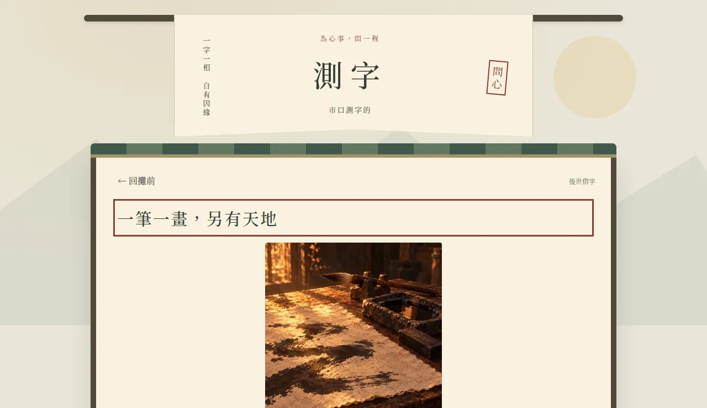
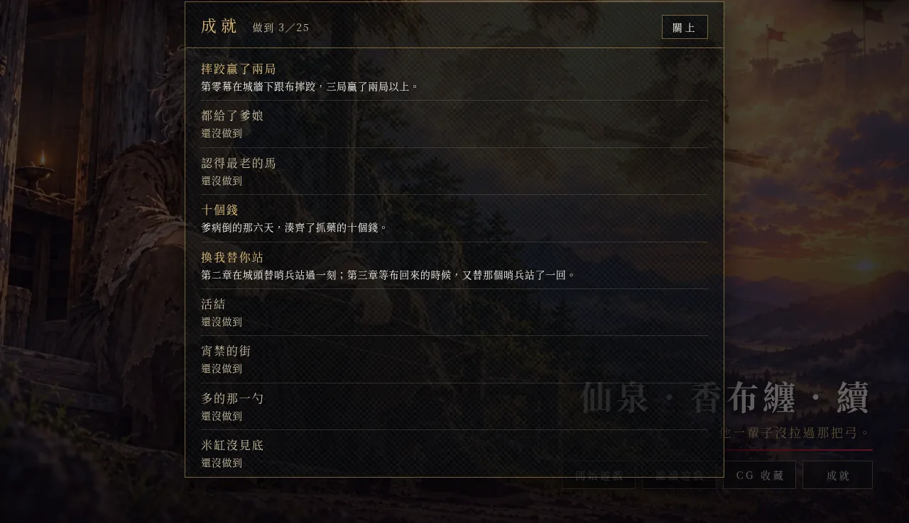

玩法：劇情之間能做的事
《續》的主線照前作的劇情走，玩家走到人或物件旁邊，劇情就往下演。這一章講主線之間玩家自己能做的事：選心聲、做生活小事、練技藝、玩小遊戲、選要過一天還是過一年、找算命的算一個、收成就。練技藝、七個小遊戲、自由時間、算命小攤、成就，都是 2026-10-22 從我丟給 AI 的幾個問題開始的，成就隔天做好。每一樣寫它從哪一句話開始、怎麼做出來、試過又丟掉什麼；還沒做的放在最後一節。
選了會被記住：心聲與心境面板
心聲為什麼分兩類、怎麼寫，在劇本與心聲。這裡講玩家在畫面上看得到的那一層。
對布說不出口的那一類，選哪一句，說出口的都一樣，選的那句記進背包裡的「思念」。其他的心聲選項（對湘、荃、娘、同袍說的話，獨處時的取捨）每個掛一個心態：守、藏、讓、等、近，生活小事的選項也掛同一套。選下去，那一條的變數加一（xin_shou、xin_cang、xin_rang、xin_deng、xin_jin），畫面上方淡入一行「記下了：守」，大約一秒就淡掉，不擋操作。
心境面板是 2026-10-18 做的（xu/game/src/plugin/mood.html）。上半是六個人的關係：布、湘、荃各五階（認得、在意、守著、默契、不用說），娘、蟬、成素各三階，用星星表示，不顯示分數，還不認識的人不列。下半是五個心態的長條，長短照最長的那一條比。面板沒有按鈕叫得出來，升階的時候、按下每一章的存檔點時，它會自己跳出來，停五秒左右。
小提示和面板合成一個 HUD，是因為那時量到的 HUD 上限是 8 個，已經用滿：說不出口、蓋板、地窖的米、準備出路、年份與刻痕、乾糧、右上的時鐘，加上這一個。2026-10-23 做成就時才查到，8 個是一個擴充功能的上限，另開一個擴充功能還能再放 8 個（Larch RPG 引擎實測）。
劈柴、挑水那些小事
劈柴是最早做進去的日常。2026-10-06 的最小版是對著木樁按三下劈開一段，柴進背包，拿到柴堆放下；10-07 改成年紀越大按越少下，柴堆照段數疊三層。2026-10-15 我試玩時留了一則回饋：「劈柴是小任務嗎？是的話，可以把柴放包包裡，然後左邊有柴堆，可以在那裡把包包裡的柴放過去」。柴堆本來就放得了柴，只是畫面上沒有任何提示，AI 給柴堆加了名牌，手上有柴時任務框指過去。
做過的日常會累計成數字，記在背包道具「日子」裡：這輩子劈過幾段柴、挑過幾趟水、陪湘幾次、照顧爹娘幾次。第九章不喝的結局，「那是我這輩子，最好的幾個下午」那一段會把這些數字讀回來。
劈柴以外的小事，AI 先寫了約 290 件提案（xu/生活小事_提案_*.md），再挑做得出來的進遊戲，台詞在 xu/劇本_生活小事.md，現在編到第一百三十六節。10-16 第六、七章那一批，決定紀錄寫的挑法是：能用一個格子、一次選擇做完，又能在同一章後面回扣，不加新素材、不動主線。做法多半一樣（xu/game/src/life.py 的 decide）：一個物件一個格子，第一次按跳出選項，選完記一個旗標、演一小段、把最後一句心聲記進「思念」，再按只剩一個表情泡泡。
很多小事在後面的章節有回扣。例如第四章〈箱子裡的弓弦〉，這一件是我拍板的：布小時候削給魏續的那把小木弓，可以換新弦、只擦灰，或原樣放回。換過弦的，第八章冬天打開包袱看得到那條新弦，第九章拿去給荃的時候弦是緊的；沒換的，要到給荃那一刻才發現弦鬆了。
沒有 Game Over 的小挑戰
2026-10-18 AI 交了一份成長弧的提案（xu/設計提案_成長弧與心聲改良.md），給每一章排一個小挑戰，操作上是躲、護、管、趕、挖、射。原則是沒有 Game Over：失敗就走另一條劇情分支，不退回重來。做出來的六個：
- 第一章〈逃難食水〉：被大人拖走以後，多一張路上的地圖，四處找水找餅，先給娘、給爹，還是留給自己；沒分到的人，到嚴家門口時的樣子不同。
- 第二章〈藥錢倒數〉：爹病倒後，六天內要湊十個錢。劈柴賣兩個錢，幫工三個錢（最多兩次），向軍候借四個錢（一次），湊不到就進爹病重的那一版。
- 第四章〈營變抉擇〉：李肅來的那一夜。讓另一個 AI 當玩家試玩以後，從選站在哪裡，改成四件手邊能做的事：攔丁公的親兵、叫各崗回帳、抹營門門軸、鬆赤兔的繩子，第四、五、七章各有回扣。
- 第五章〈躲巡兵〉：宵禁的街上躲巡兵的火把，被看見就進盤問，花錢，或被帶去問話。
- 第六章〈管米〉：地窖的米吃到零，進〈米缸見底〉；〈先讓誰吃〉每次下地窖添一勺；〈搜屋夜〉選怎麼藏。
- 第七章〈護人一段〉：守城後的下午遞水、擋箭；出城前有六件事，只有五夜。
練技藝：營裡的弓、木人樁，跟劈柴同一套手感
2026-10-22 傍晚我問 AI：「我們的劇情到最後都沒有魏續拿弓射箭？」接著說：「不然我們有那麼多箭靶可以射，應該也可以做成軍營的時候的小遊戲？」「打木樁也可以吧？」「或是練生活技能之類的」。
AI 提的做法是照劈柴那一套：按幾下完成、越練越快、記進「日子」，只用地圖上已經有的道具，不畫新圖。我選了軍營和日常一起做。做出來八樣：五原軍營的射箭，五原和下邳高順營的木人樁，再加上搓繩、磨刀、餵馬、舂米、翻曬穀、汲水，都放在各章本來就有的道具旁邊。
手感是從劈柴抽出來的（xu/game/src/practice.py），劈柴、汲水和新的技藝共用：十四歲以前按五下完成一回，十五到十七歲四下，十八歲起三下；同一樣練滿十回少按一下，五十回再少一下，最少一下。任務框寫得出這一回要按幾下，例如「打木人樁（三下）」。每一樣第一次和第十次完成時有一句旁白，多半再接一句魏續的心聲。
射箭用的是營裡配的弓。第一次射完，心聲是：「營裡的弓又硬又重，三箭下來，手指都勒紅了。布削給我的那把小木弓，還收在行李最底下。」標題畫面那一句「他一輩子沒拉過那把弓。」照舊成立。
程式是 Codex 寫的，Claude 審過、合進來。合的時候，十八段里程碑原本只有一句動作旁白，Claude 照我那天定的對話方向（下一節）補了 13 句心聲，送審稿閘門，評審新稿 4 票、舊稿 0 票。xu/game/tests/skills_check.mjs 拿建好的專案驗按鍵、里程碑和換季，附負控制。
七個小遊戲：有人交代，做完回去說
同一天下午，我問能不能「再加一些小遊戲小任務進去各城裡之類的」。AI 列了一批，條件是不用新圖、程式小改、台詞十句以內。我七個都勾了：
| 章 | 小遊戲 | 玩家做什麼 | 後面跟著變的 |
|---|---|---|---|
| 一 | 看馬牙 | 175 年夏在嚴家，長輩牽出三匹馬，三匹的門牙都看過，才能回答哪一匹最老；答錯可以再看 | 答對的，第四章在營裡看馬用得上，第八章第一次餵馬時想起那匹灰馬 |
| 二 | 牆頭的孩子 | 布在院裡練戟，三個鄰家孩子趴在牆頭看她，選拿柴趕、遞餅上去、站到牆下，或回去劈柴 | 井邊鄰居問的第一句跟著換 |
| 二 | 站在她後面的人 | 三次回校場，數跟在布身後比劃的兵：3 個、7 個、12 個 | 181 年那一次，魏續自己也站進去 |
| 四 | 量斗 | 188 年秋領糧，小吏說「你是主簿家的，多給你一把」，選撥回去、收下，或讓給後面的老兵 | 那晚吃祿米，心聲照選的那一種說 |
| 五 | 門上那盞燈 | 傍晚舀一勺油點燈、把燈芯壓低，或今晚不點 | 點了，地窖的燈油少一勺；第六章第一次走回空宅，想起那一晚 |
| 九 | 四支箭還給荃 | 林子裡撿到的四支箭交還，先交最舊的、最新的，或四支一起 | 荃看羽毛掉了多少，一支一支認出先後 |
| 九 | 洞口聽水 | 湘進洞取水，跟出去在洞外等，按三次「等」，每次演一段 | 第三次以後湘出來，接那碗水 |
七個小遊戲的程式是 Codex 寫的，Claude 審過。一開始的玩法是走過去按、選一個。我問：「小遊戲是在 RPG 系統裡面交任務的那種嗎？」接著選了加任務提示：有人交代（長輩叫他去看馬、軍候叫他去數人），左上的任務框指向目標，做完回去回報。這一層也是 Codex 做的，七個都接成交代、提示、回報、提示消失。
接上去以後，第一、二、四、九章的整章自動試玩都卡住了。Larch 的任務框只顯示第一條條件全部成立的提示，小遊戲交代之前的「跟湘說話」「跟長輩說話」排在主線前面，就一直蓋住「回家吃飯」「帶她去軍營」這類主線提示，玩家會以為非做不可，自動玩家也找不到下一步。改成交代之前的提示排在主線後面，接了任務以後的提示排在前面，回報完就回到主線。檢查程式多一條，附負控制：故意把交代前的提示排到最前面，要抓得到。
台詞送審稿閘門時卡過兩場。〈牆頭的孩子〉和〈量斗〉連跑三輪沒過，評審的理由一樣：先有人交代、做完再回去報告，魏續自己在意的事就變成在辦差。我選保留交代回報，再寫一輪。〈量斗〉10-23 凌晨過了。〈牆頭的孩子〉改到第五輪，評審還是 4 比 0 偏舊稿，我選了 AI 建議的收法：留第五輪，補一句布回到院子另一頭練戟，交代她人在哪裡。10-23 早上那一輪，新稿 4 票、舊稿 0 票，通過。
改這批台詞時我定了一個方向：「劇情對話需合理，心境描寫可細」「可以用不一定那麼文言的方式白話一點講話，玩遊戲的人可能是高中生，我們可以用國中生能懂的方式解釋也行」，又補一句「不止是小遊戲吧，本身本線劇情也是類似意思」。這個方向寫進審稿準則第 16 條，全劇適用。看馬牙照這個改過：答對以後，長輩用白話解釋一次，「馬一輩子都在嚼草，牙會越磨越平，牙面上的凹洞就磨不見了，門牙也會慢慢往前斜。」
第零幕還有一個更早的小遊戲（2026-10-18）：城牆下跟布摔跤三局。每局旁白先寫布怎麼出招，撞過來、抓衣襟往下拉、伸腳絆，玩家選怎麼接，只有一種接得對。贏兩局以上是魏續贏；贏不到兩局，魏續說「這局不算，我腳滑」，布說「好」。兩種結果都對得上第二章的兩句心聲：校場上的「小時候摔跤，都是我贏。」，井邊的「摔跤這輩子第一次輸給她」。
自由時間：過一天、一季、一年
也是 10-22 那天，我說：「另外在曹營的時間那麼長，我覺得我們的時間流速可以讓玩家選擇年、季、日」。為什麼要有「日」，我的理由是：「我們之後加了足夠多的遊戲收集物或內容物進去的時候，就會有玩家需要時間單位是日來收集才收得完了」。章節我勾了三段：第八章曹營、第五六章長安、第四章并州。
做法寫在 xu/game/src/freetime.py。住處門邊放一個「休息」，面向它按動作鍵，選過一天、過一季、過一年，或不了。一季算九十次睡覺，不寫陰曆日期。這一季的主線還沒做完，選一季、一年都只回一句心聲：「還有事等著我去辦。辦完了，再回來歇。」過一年會一路歇到下一件事為止，劇本裡寫了年份的劇情不會被跳過。地窖那幾年只有過一天、過一季。
停在哪裡不靠手填的年表：程式從劇本的「時間：」、地圖名稱、事件的年季條件，把每一個劇情停點抽出來。住處另外複製一份春夏秋冬的副本（叫「住處・春」這樣），休息的時候在副本裡過日子，原本的日常、生活小事和出口都留著，推劇情的事件拿掉。
這一套也是 Codex 寫的。交回來附的驗收：xu/game/tests/freetime_check.py 從改動前的專案另外抽一份停點當對照，逐日、逐季、逐年走一遍，41,400 組沒有一組越過劇情停點；負控制是故意漏掉一個劇情年，四章都抓得到。合進來以後又查出四個問題，前兩個讓地圖整張讀不出來：
- 主角事件被加了一個空的分頁欄位，引擎報「事件分頁格式不正確」，第四章開場直接停在讀取畫面。主角事件不能有分頁，空的也不行。
- 第八章曹營的休息點，一個事件 200 頁，引擎上限 98 頁。改成每張曹營圖只放自己那個時代的年份，最多 80 頁。
- 第四章冬天的住處副本開著引擎內建的雪，沒鋪自製的雪：複製住處要排在換成自製雪之前。
- 第八章休息跳季之前，要先把主角換回那一年走路的樣子，不然冬天可能還坐在門檻上。
算命小攤：一席問命
10-22 晚上我說：「算命仙，真的可以算命喔」，接著幾句：「可以看要用什麼算，但是要先查好資料才行」「可能可以用現代的也沒關係，那算是有些算命是紫微有些是鳥卦有些是星座之類的」「第一次碰到，會算魏續的命」「對話過後，就是可以讓玩家來玩，算玩家的命，看玩家要輸入什麼互動」。二十分鐘後又補：「算續的部份，需要和劇情有關喔」，算命的遊戲放「獨立 GitHub Pages 比較好吧？」；要產圖的話，畫風跟遊戲一致，「不要因為是星座，就完全不同」。
AI 問第一位算命仙用什麼算魏續的命，我回：「都要啊，我們各城可能都有算命仙，可以各種都做」。後來 AI 排了一份各城用哪一種，我在確認頁選照這樣排：五原測字、相面；長安日者擇日、轉式盤；下邳鳥卦；許都塔羅、星座；往北的路邊紫微，下一輪做。
算命的遊戲放在獨立的公開 repo yazelin/larch-xu-fortune，叫「一席問命」，用瀏覽器開就能玩：https://yazelin.github.io/larch-xu-fortune/。七門是測字、鳥卦、塔羅、星座、相面、日者擇日、轉式盤，紫微標「下回」，程式是 Codex 寫、Claude 驗的（10-22 晚上）。AI 問要不要等畫換好再公開，我選現在就開，先放當時的版本；10-23 凌晨換上照遊戲畫風產的 42 張圖：七門、攤位、二十二張塔羅、十二星座。
查不到的就明講。repo 的 README 有一節〈考據與還沒核實〉：相面的眉、眼、鼻、口、耳選項，沒有核到漢代的定法，全部標「擬寫、未核實」；日者擇日只有《論衡．譏日》記到的日禁才判宜忌，其他日子回答「未可定宜忌」，不自己編凶日表。
遊戲裡怎麼接，寫在 xu/game/src/fortune.py，現在新版接了五原兩位、長安兩位。第一次跟算命的說話，先替魏續算。市口測字的讓他寫一個字，他寫了自己名字裡的「續」：
算命的：絲就是線。線斷了，把兩頭打個結接起來，就叫續。
魏續：那我是什麼命？
算命的：替人接線的命。人家走散了，你去找回來；人家沒做完的事，你接著做完。
演完，旁白寫「算命的越過魏續的肩膀，朝你看過來」，算命的問：「你呢？也坐下來算一個？」選「算一個」，跳到小遊戲卡，開的就是這一位的那一門；玩完或中途離席，回到攤子前面同一格。再去找他，只問要不要算。五原這兩位只在第一到四章算得到：序幕魏續還太小，第九章他已經六十二歲。長安這兩位在第五、六章；第五章的長街在宵禁夜裡，路人收掉，實際上第六章 m-f2a 到 m-f2e 才碰得到。

10-23 凌晨我特別提醒：「在遊戲裡的時候是直接嵌入某一個遊戲頁，不會有一個首頁讓人選哪一個算命喔！！！」AI 回頭查嵌入的版本，左上的字標還連得回七門選單，嵌入時把連結拿掉，加了測試；「回攤前」在嵌入時是離席回遊戲。
接進 Larch 播放器踩了一個坑。小遊戲卡在播放器裡是一個沙盒 iframe，卡片再開一層 iframe 放算命的網頁，那一層也在沙盒裡，送出來的訊息來源變成字串 'null'。卡片原本只收算命網頁網址來的訊息，存檔、離席全被丟掉，卡片永遠不送完成，玩家就卡在算命的畫面。修法是只認自己開的那個 iframe，來源接受網址或 'null'，回訊息給它時用 '*'。用 Node 寫的模擬測試抓不到這個（模擬的來源寫死成網址），所以多了一條「來源 null」的測試，舊的卡片要過不了。
成就：25 個，標題畫面一顆按鈕
10-22 晚上我問：「我們有成就系統嗎？內建或是我們需要自製」。我定的方向是自己做：每個成就一個變數，做到的時候心境面板上方跳一行小提示，標題畫面加一顆「成就」按鈕；也要 AI 試第二個擴充功能能不能多開面板。
AI 先在本機預覽量可行性（xu/game/tests/hud_plugin2_probe.mjs）：
- 另開一個測試用的擴充功能，放 2 個、8 個 HUD，
xu-voice原本的 8 個都還在，最多 16 個一起載入。xu-voice塞第 9 個，它的 HUD 全部不見；測試用的那個塞 9 個，只有它自己的掉。原始碼裡那一行寫的是「一個擴充功能最多 8 個常駐 UI」。 - 標題畫面讀得到「跨週目保留」的變數，一般變數讀不到；
localStorage一讀就丟 SecurityError，window.larch是 undefined。
所以成就的變數 ach_<代號> 一律打開跨週目保留：回到標題、重新開始、讀舊存檔都不會清掉，標題也才讀得到。判斷放在 RPG 系統的公用事件，一組條件一個，每張地圖都會檢查，引擎上限 40 個，現在用 30 個。最早的寫法是每張地圖插一個條件事件，專案檔多了 8.5 MB：專案檔裡每張卡存兩份，每張地圖多插一點，檔案就多兩倍。改成公用事件只多 0.18 MB。兩個結局的場景圖一進場就是一串事件接力演到全書終，公用事件等不到空檔，那兩個改成一進場就設。
成就表寫在 xu/game/docs/成就.md，程式直接讀那張表。名稱和說明是 AI 擬的，我在確認頁選照用。名稱不說結局內容：兩個結局叫「終之一」「終之二」，跟章節字卡一樣；還沒做到的只露名稱，說明做到以後才看得到。舉幾個：
| 名稱 | 做到以後的說明 |
|---|---|
| 認得最老的馬 | 在嚴家看了三匹馬的牙，認出最老的是灰的那匹。 |
| 十個錢 | 爹病倒的那六天，湊齊了抓藥的十個錢。 |
| 活結 | 李肅來的那一夜，把赤兔頸下的死結拆開，重新打了一個活結。 |
| 多的那一勺 | 地窖那幾年，小鍋裡多出來的那一勺，六次都沒有添給自己。 |
| 一年一年過 | 許都那二十五年，四次想念都選了照舊餵馬，一年也沒有跳過。 |
| 那把小木弓 | 布削的那把小木弓交到荃手上的時候，木頭沒裂，弦也是緊的。 |
| 第十回 | 射箭、打樁、搓繩、磨刀、餵馬、舂米、翻曬穀，其中一樣練到了第十回。 |

心境的五個：從「最長的那一條」改成門檻
心境的五個成就（擋在前面、把話收起來、退一步、留著位置、肯讓人看見），第一版是到了結局，五個心態哪一條最長就亮哪一個。引擎的條件只能跟固定的數字比，比不了兩個變數誰大，所以交給心境面板的 HUD 在結局時比，再用 larch:set 寫回變數，擴充功能因此多要一個寫變數的權限。
AI 用邏輯模擬器照各種選法跑到全書終，十二輪裡有十輪最長的是「守」：選項裡掛「守」的最多，掛「等」的最少，「等」「讓」要幾乎每次都選才有機會。10-23 我在確認頁選了每一條選滿幾次就亮，次數照模擬的結果訂。模擬器多傳一個原始選項給選擇的回呼，就能照「選了會加哪一條」來選。每一條各跑三輪「選項裡有加這一條的就選它」，主線走到全書終，最多是守 55–57、藏 37、讓 39、等 20–21、近 52–54；隨便選，大約是守 18–21、藏 15–16、讓 14–15、等 6–8、近 18–23。門檻取最多值的七成：守 40、藏 26、讓 27、等 14、近 37，要故意往那一條走才拿得到。HUD 寫變數那條路留著，現在沒用到。
短測 node tests/ach_probe.mjs 在本機預覽真的玩一遍：第三章城頭先放兩個早就成立的條件，再真的去跟哨兵選「換我替你站，你去歇」，三個小提示都出現，重新整理回到標題是做到 3／25。結局那一段，「近」37 次亮「肯讓人看見」，「守」39 次差一次，不亮。負控制拿掉公用事件，什麼都不亮，標題是 0／25。我在確認頁選的是先接進新版，下次推 Larch 時一起驗。
接下來：10-23 定的三個方向
10-23 凌晨我問：除了算命，有沒有收集的系統、成就、買賣；「然後到結尾的仙泉，如果選了喝，那未來的仙生還很長，該怎麼過呢」。AI 對過正典，列了玩法和工程量，寫成三份設計草案放上確認頁（原文在 xu/game/docs/設計草案_三個方向_1023.md）。我在確認頁定下來，AI 寫進 xu/設計.md〈新版之後的三個方向〉。三樣都還沒做。
信物（最小版）
- 新版已經接上的序幕到第四章，先做六件：小木弓、娘縫的布條、半張餅、爹的斧頭、舊黑布冠、環首刀。拿到的那一場，最後多一步「得到道具」。
- 信物一路留在背包，不會消失：交出去的那一場照演，背包裡那一件不拿掉。
- 背包本來就看得到道具和說明，不另加面板。
城裡的小交易（最小版）
- 買的都是收藏品，不影響劇情，但各處用得到。我舉的例子：環首刀、一些兵器、一些藥草、送給蟬、湘、荃（還有布？）的禮物、加不同數值的防具。
- 錢從已經有的日常來（劈柴、幫工），不另做打工；最小版先在五原市裡擺一個攤子。
- 還沒定：防具加的數值用在哪裡（全劇排進設計的五場戰鬥都是「護」；第三章衝出帳子另有一場打不動的營兵，只是擠過去，不算分勝負）；送禮給誰，送了有沒有一句回應。
仙生：喝了之後留在谷裡
- 五個人的結局之後，讓玩家選「結束」還是「體驗仙生」。
- 稱呼照關係，不因為變成女的續而改。
- 時間跟自由時間一樣選天、季、年。喝完直接跳到五年後，那時燈影照出來是女的續，所以仙生裡玩的是女的續，變身的過程不演。
- 體驗過仙生的，開始遊戲時可以選重玩或仙生；也可以在開始選單直接選仙生，讀檔也行。
- 還沒定：谷裡還跳不跳心聲；第八章說要「等到那天親手交給奉先」的小木弓，要不要在仙生裡交出去。
10-23 早上我又勾了幾件，排著要做：
- 一起走走，第一批五段：陪湘採果、陪娘買糧、帶荃看木匠、陪蟬繞後院、陪成素換崗。起頭是 10-22 我問，關係階能不能延伸成陪他或她一起去走走；每段配一張 CG，看過收進回想。台詞初稿 60 句寫在分支上，還沒讀稿，五張 CG 只有規格。
- 下邳、許都、往北的算命仙，等那一章接上新版時一起做。
- 新的生活小事：街坊的小請託、布從軍那幾年的口信、節令小場、夢與回想，順便多幾個掛「等」「讓」的選項，讓這兩條長得起來。
- 食譜和熟練度面板，10-22 我選了先用現有的，之後再說。
引擎在這些系統上碰到的上限，整理在Larch RPG 引擎實測；心聲的寫法在劇本與心聲。